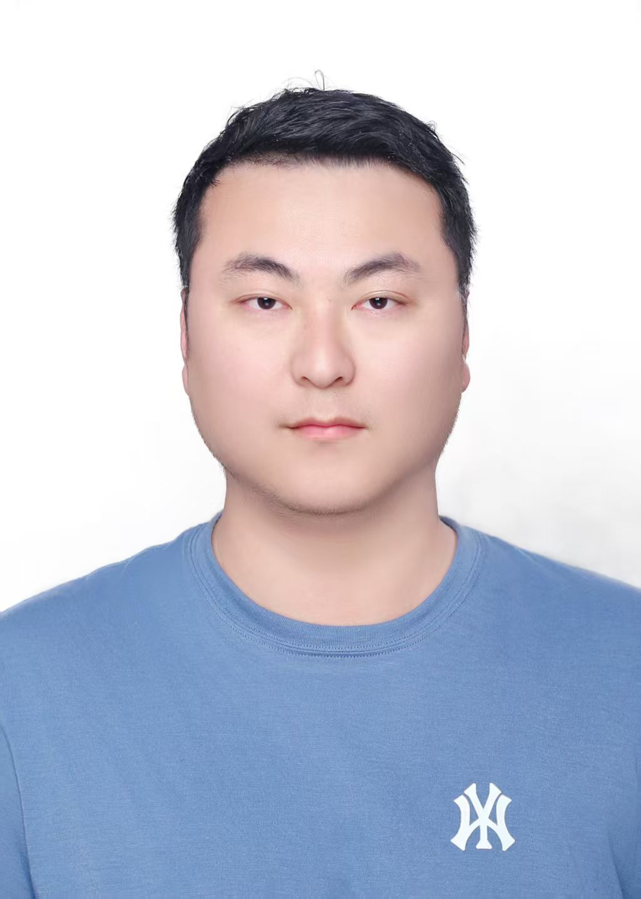

我是一名拥有7年跨行业经验的实验室工程师 / QC分析师，深耕生物医药与工业检测领域。从分子生物学检测到理化分析，从方法验证到实验室合规管理，具备完整的技术能力链。
熟悉GMP/GLP规范体系下的实验室运作，在生物制品QC、环境监控、方法验证与优化方面积累了丰富的实战经验。善于运用QC工具（鱼骨图、PDCA）解决复杂检测难题。
工作之外，我持续关注分析化学与生物检测领域的前沿技术，致力于在规范、严谨的质量体系下为产品安全与合规保驾护航。

无菌检查、环境监测、工艺用水毒性检测、生物制品常规检测 — GMP规范下的生物分析全流程。
原子吸收光谱(AAS)、ICP-OES、UV-Vis、常规理化分析(pH/电导率) — 多行业来料与产品检测经验。
核酸提取与纯化、PCR与qPCR、电泳、ELISA检测 — 扎实的分子生物学实验操作与数据审核能力。
GLP/CNAS体系、ALCOA+数据完整性原则、偏差调查(OOS/OOT)、CAPA流程 — 严谨的合规意识与执行经验。
分析方法验证、QC工具(鱼骨图/PDCA)问题定位、对比实验设计 — 曾主导优化检测周期缩短50%。
试剂/耗材/标准品管理、危化品台账与安全存储、应急预案管理 — 全年安全"0"事故记录。
负责X射线荧光光谱等精密仪器的日常操作与校准，数据报告差错率低于0.1%；主导处理荧光仪器真空故障等5+次重大设备隐患并完成CAPA报告；担任中方联络人处理400+样品问题。
独立负责原材料(合金/煤炭)的化学分析(ICP-OES, AAS)与工业用水送检；主导优化ICP-OES检测周期，运用鱼骨图和PDCA循环将检测周期缩短50%；起草修订实验室管理规程及SOP超20份，协助通过CNAS认证及客户审计。
在GMP规范下熟练执行DNA/RNA提取、PCR、qPCR、电泳等常规分子生物学实验，独立完成实验记录与报告；负责荧光定量PCR实验数据审核与汇总，确保数据误差<3%；参与《荧光定量PCR标准操作规程》的修订与升版工作。
独立负责向高校及工业客户提供生命科学产品的技术参数解答与基础应用支持，善于将复杂技术信息转化为清晰易懂的说明，具备多任务环境下高效准确的沟通与文档处理能力。
主修生物工程专业，系统学习分子生物学、生物化学、微生物学等核心课程，为后续在生物医药与检测领域的职业发展奠定了坚实的理论基础。